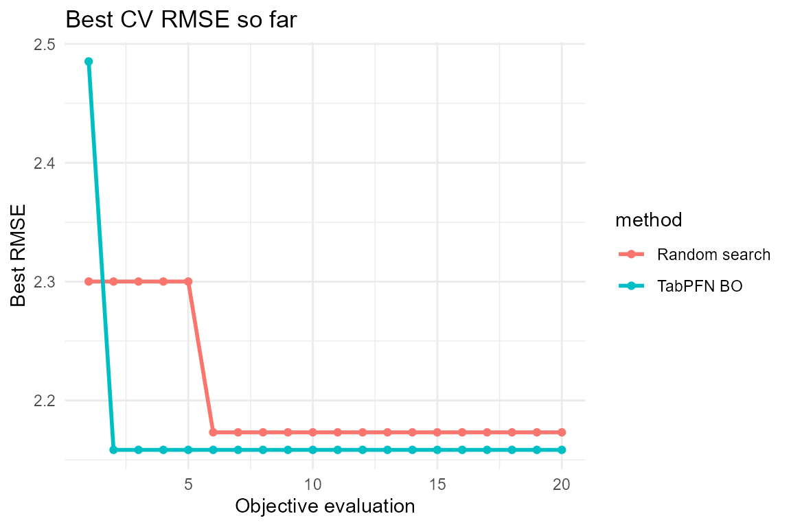
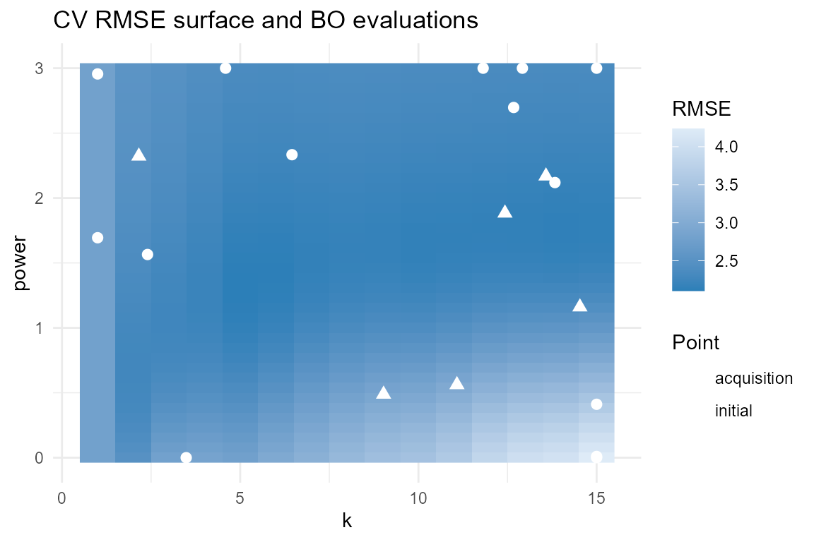

Hyperparameter Tuning with Bayesian Optimization
Source:vignettes/bayesian-optimization-tuning.Rmd
bayesian-optimization-tuning.RmdIntroduction
The companion vignette Bayesian Optimization with TabPFN shows the mechanics of the optimizer on a known analytic function. This vignette takes the same machinery to a realistic task: tuning the hyperparameters of a model when every evaluation means a full cross-validation run.
We tune a k-nearest-neighbours regressor on mtcars by
choosing the number of neighbours k and the
distance-weighting exponent power. The objective is noisy,
non-convex, and cheap enough to run in seconds — a good stand-in for the
kind of expensive black box Bayesian optimization is built for.
Requires the full
tabpfnpackage (>= 8.1.0) andtabpfn-extensions[bayesian_optimization]. Install withsetup_tabpfn(install_bayesian_optimization = TRUE).
The black-box objective
Each evaluation runs 5-fold cross-validation of a weighted k-NN and returns the out-of-fold RMSE. Lower is better, so we will minimize:
knn_cv_rmse <- function(k, power, folds = 5, seed = 7) {
set.seed(seed)
X <- as.matrix(mtcars[, c("cyl", "disp", "hp", "wt", "qsec")])
y <- mtcars$mpg
n <- nrow(X)
fold <- sample(rep(seq_len(folds), length.out = n))
d <- as.matrix(stats::dist(X))
errs <- numeric(n)
for (i in seq_len(n)) {
tr <- fold != fold[i] # training = all folds except i's
dd <- d[i, tr]
ord <- order(dd)[seq_len(k)]
w <- 1 / (dd[ord] + 1e-8)^power
pred <- sum(w * y[tr][ord]) / sum(w)
errs[i] <- pred - y[i]
}
sqrt(mean(errs^2))
}
# Wrapper the optimizer calls: `par` is a named vector c(k = , power = ).
objective <- function(par) {
k <- max(1L, min(15L, round(par[["k"]]))) # k is discrete -> round it
knn_cv_rmse(k, par[["power"]])
}A quick look at the landscape confirms it is not something a grid
search nails easily — there is a sharp ridge as power
grows:
grid <- expand.grid(k = 1:15, power = seq(0, 3, length.out = 40))
grid$rmse <- mapply(function(k, p) knn_cv_rmse(k, p), grid$k, grid$power)Running TabPFN Bayesian optimization
We search k in [1, 15] and
power in [0, 3], with 6 random initial points
followed by 14 acquisition steps (20 evaluations total):
bo <- tryCatch(
if (run_live) {
tab_pfn_bayesian_optimization(
fun = objective,
bounds = list(k = c(1, 15), power = c(0, 3)),
n_init = 6,
n_iter = 14,
maximize = FALSE, # minimize RMSE
device = "auto",
random_state = 1,
verbose = FALSE
)
} else {
NULL
},
error = function(e) NULL
)
used_live <- !is.null(bo)
if (!used_live) bo <- bo_trace
data.frame(
source = if (used_live) "live TabPFN run" else "precomputed trace",
k = round(bo$best_x[["k"]]),
power = round(bo$best_x[["power"]], 2),
cv_rmse = round(bo$best_y, 4)
)## source k power cv_rmse
## 1 live TabPFN run 12 1.88 2.1585How does it compare with random search?
Bayesian optimization earns its keep by beating a naive baseline on the same budget. Let’s spend 20 evaluations on random search and compare the best value found so far:
set.seed(42)
n_budget <- nrow(bo$X) # match the BO budget exactly
rs_k <- round(runif(n_budget, 1, 15))
rs_power <- runif(n_budget, 0, 3)
rs_y <- mapply(function(k, p) objective(c(k = k, power = p)), rs_k, rs_power)
library(ggplot2)
hist_df <- rbind(
data.frame(eval = seq_along(bo$y), best = cummin(bo$y), method = "TabPFN BO"),
data.frame(eval = seq_along(rs_y), best = cummin(rs_y), method = "Random search")
)
ggplot(hist_df, aes(eval, best, colour = method)) +
geom_line(linewidth = 1) +
geom_point() +
labs(title = "Best CV RMSE so far",
x = "Objective evaluation", y = "Best RMSE") +
theme_minimal()
Where did the optimizer look?
Plotting the objective surface together with the points TabPFN BO evaluated shows how it concentrates around the good region instead of sampling blindly:
pts <- data.frame(
k = bo$X[, 1],
power = bo$X[, 2],
type = c(rep("initial", 6), rep("acquisition", nrow(bo$X) - 6))
)
ggplot(grid, aes(k, power)) +
geom_raster(aes(fill = rmse)) +
geom_point(data = pts, aes(shape = type), colour = "white", size = 2.5) +
scale_fill_gradient(low = "#2c7fb8", high = "#deebf7") +
labs(title = "CV RMSE surface and BO evaluations",
fill = "RMSE", shape = "Point") +
theme_minimal()
Warm-starting from earlier runs
If you already evaluated some configurations — a pilot study, a
previous session, or a parallel worker — feed them straight in with
init_X / init_y and let BO continue from
there. Here we resume the first run and add 10 more iterations:
bo2 <- tryCatch(
if (run_live) {
tab_pfn_bayesian_optimization(
fun = objective,
bounds = list(k = c(1, 15), power = c(0, 3)),
init_X = bo$X,
init_y = bo$y,
n_iter = 10,
maximize = FALSE,
device = "auto",
random_state = 2,
verbose = FALSE
)
} else {
NULL
},
error = function(e) NULL
)
best_warm <- if (is.null(bo2)) bo_trace$bo2_best_y else bo2$best_y
data.frame(
run = c("first run (20 evals)", "warm start (+10 evals)"),
best_rmse = round(c(bo$best_y, best_warm), 4)
)## run best_rmse
## 1 first run (20 evals) 2.1585
## 2 warm start (+10 evals) 2.1448Warm-starting reuses every past evaluation, so the second run never regresses below the first run’s best value.
Notes
- The search domain is always the unit hypercube internally;
boundsare scaled in and out automatically, andfunis always called in the original space. - EI maximizes: pass
maximize = FALSEto minimize, as we did for RMSE. - Discrete hyperparameters (like
k) are handled by rounding inside the objective. Keep the bounds continuous for the optimizer and let your wrapper snap to valid values. - Increase
n_estimatorsfor a more stable surrogate at the cost of speed, and usedevice = "auto"to pick up a GPU when one is available. - To drive the loop yourself — batch candidates, asynchronous workers,
custom stopping rules — use
tab_pfn_bo_suggest(). - When the Bayesian optimization extension is not configured, the
figures above reuse a precomputed optimization trace
(
inst/extdata/bo_tuning_trace.rds) instead of running the surrogate live.